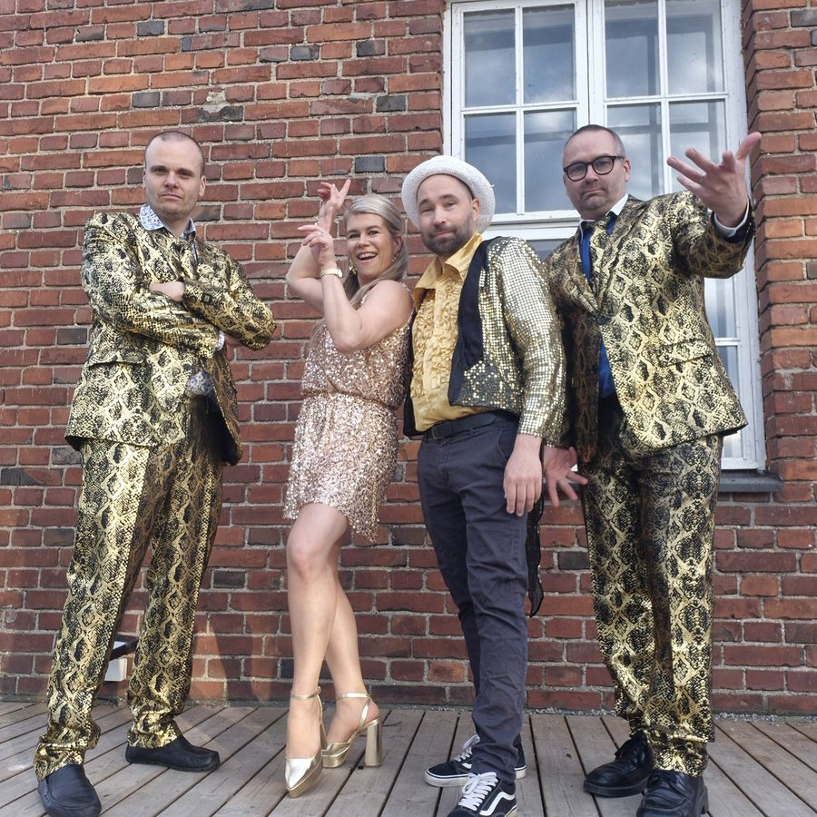
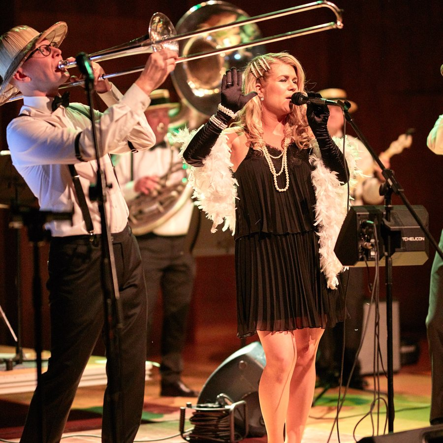
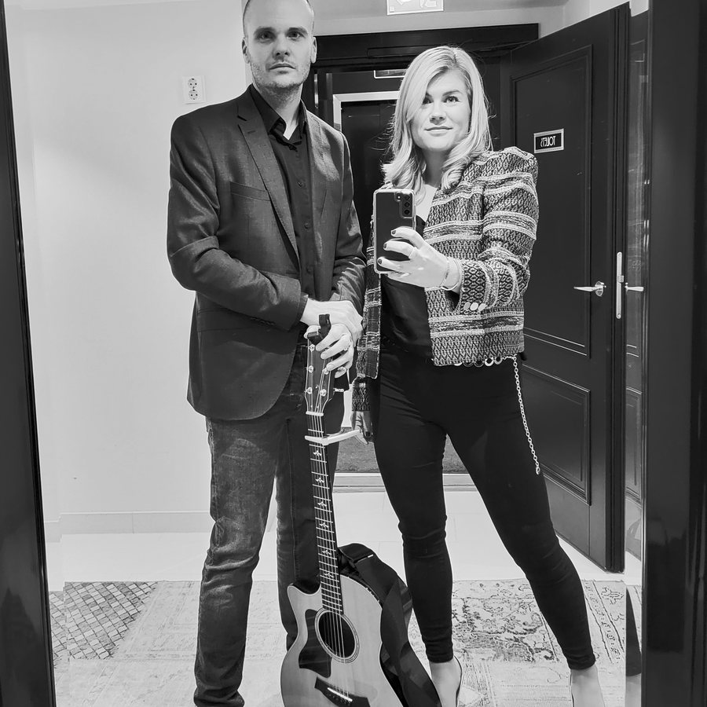
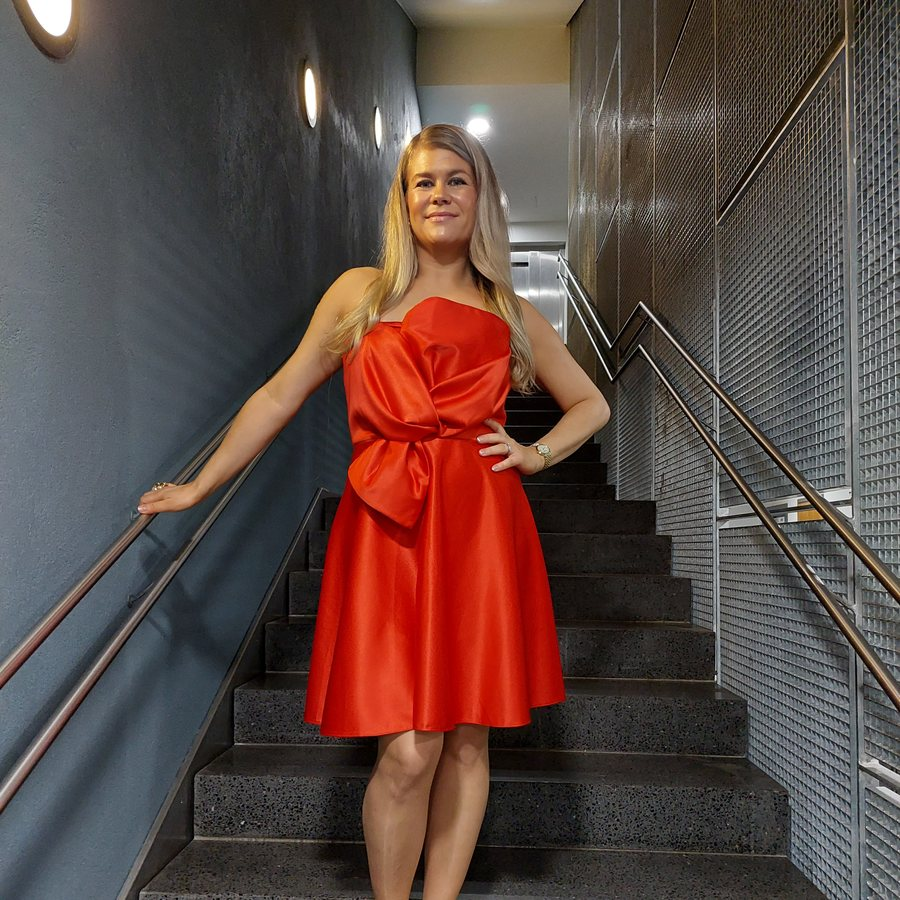

Esiinnyn laulajana ja juontajana juhlissa, yritystilaisuuksissa ja tapahtumissa. Voit varata minut laulajaksi, juontajaksi tai molempiin rooleihin. Jokainen tilaisuus on ainutlaatuinen, ja siksi suunnittelen esiintymiseni aina tilaisuuden luonteen, tunnelman ja toiveidesi mukaan.
Nina Lindroosilla on yksi maan todella upeimmista äänistä. Hän on kokenut laulaja, joka hallitsee yhtä lailla jazzin kuin popinkin, ja hänellä on vahva, koskettava lavaolemus. Studiossa hän on tonaalisesti varma ammattilainen.
Hans Rautio, musiikkituottaja
Dresden Dixieland Jazz FestivalSuomi AreenaCotton Club HamburgGöteborg Classic Jazz FestivalBaltic JazzSavoyOn the RocksElojazzIdrottsgalanGrani AidThe Voice of Finland 2026Tangomarkkinat 2026Åkes Jazzfestival
Dresden Dixieland Jazz FestivalSuomi AreenaCotton Club HamburgGöteborg Classic Jazz FestivalBaltic JazzSavoyOn the RocksElojazzIdrottsgalanGrani AidThe Voice of Finland 2026Tangomarkkinat 2026Åkes Jazzfestival
Ammattitaitoa, energiaa, läsnäoloa ja aitoja kohtaamisia – hetkiä, jotka jäävät mieleen.
Lavalla olen kotonani. Kohtaan yleisön luontevasti ja rakennan esiintymisen tilanteen mukaan – tyylikkäästä ja tunnelmallisesta energiseen ja viihdyttävään.
KOKOONPANOT

01
Partybändi
Nina & The Party Band · 2026
Solisti ja 2–5 soittajaa.

Kuva: Thomas Törnqvist02
Jazzbändi
Solisti ja 2–7 soittajaa.

03
Duo
Nina & Nygge · 2025
Solisti ja kitaristi tai pianisti.
04
Soolo
Solisti, yhdestä kappaleesta (a cappella) lyhyeen esiintymiseen tai pidempään kokonaisuuteen taustamusiikin säestyksellä.

05
Vieraileva artisti
Solisti valmiiseen kokoonpanoon – pienestä kokoonpanosta isompaan big bandiin.
JUONTO SAMALTA IHMISELTÄ
Juontoa lämmöllä, varmuudella ja tilannetajulla.
Jokaisen kokoonpanon saa juonnon kanssa tai ilman.
Juonnan juhlia, yritystilaisuuksia ja tapahtumia luontevasti ja yleisöä kuunnellen. Huolehdin kokonaisuuden sujuvuudesta ja siitä, että tunnelma kantaa alusta loppuun.
MISTÄ HINTA MUODOSTUU
Valmista hinnastoa ei ole, koska jokainen ilta on erilainen. Viisi asiaa ratkaisee:
Kokoonpanosoolo, duo vai bändi, ja montako soittajaa
Juontotuleeko se mukaan vai ei
Kestokappaleiden ja settien määrä, erityistoiveet
Äänentoistoonko se paikalla valmiina, vuokrattava vai tuleeko se mukanani
Paikka ja ajankohtamatka ja sesonki, esimerkiksi pikkujoulukausi
Kerro budjettihaarukka lomakkeella, niin ehdotan siihen sopivaa kokonaisuutta.
Händerna mot himlen · Ääni ratkaisee · The Voice of Finland 2026
JAZZBÄNDI
Min evighet · EP Jag andas in · 2025
VIERAILEVA ARTISTI
L.O.V.E · Acoustic Dixie Six feat. Nina Lindroos · Back with a swing! · 2023
Lisää Spotifyssa ja YouTubessa.
MUITA ÄÄNINÄYTTEITÄ
Antaa olla · single · 2021
Hunajainen – A Taste of Honey · Riki Sorsa & Nina Lindroos · Kun tunnet rakkauden… · 2013
Den våren · single · 2021
On the Street Where You Live · Grani Big Band, Nina Lindroos & Jusa Junttila · The Best of Åke’s Jazz Festival 2019 & 2020 (Live)
SUOSITUKSET
Nina toimi GraniAID-konsertissa sekä juontajana että solistina. Hän hoiti molemmat roolit upeasti – lämpimästi, luontevasti ja ammattitaidolla. Nina on valovoimainen ja karismaattinen moniosaaja, jonka kanssa on ilo tehdä yhteistyötä!
Antti Harsunen, GraniAID-tuottaja 2026
Jag har ordnat några större fester dom senaste åren, där Nina varit solist med sitt band. Rekommenderar varmt – härlig musik längs med kvällen.
Tom Gordin, Senior Advisor, Helsinki Horse Show
Nina och Nygge var fantastiska och underhållande! Nina var en baddare på att få med hela gänget ut på dansgolvet och fick mycket beröm för sin fina sångröst och sin förmåga att sjunga många olika genrer. Vad jag än ordnar i framtiden hoppas jag att denna duo sköter musikarrangemangen. Kan varmt rekommendera dem!
Tomas Malmström, yksityisjuhlat Klobbenilla
Tack Nina för ditt uppträdande! Det var verkligen roligt att få ta del av din sång med fint ackompanjemang, ett fint inslag som skapade glädje och god stämning.
Karin Nylund, myyntipäällikkö, Ekenäs Sparbank Ab
VARAUKSET
Kysy vapaita ajankohtia
Kerro tilaisuudesta, niin ehdotan kokoonpanoa, keikan pituutta ja ohjelmistoa.